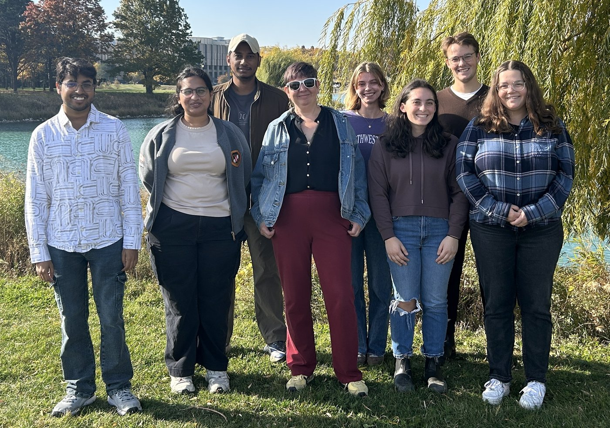
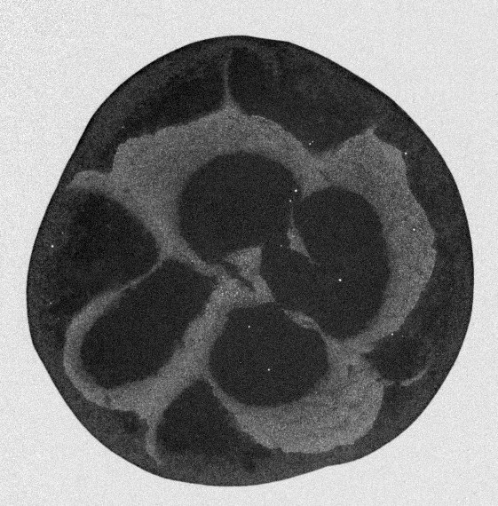

I'm a third-year physics PhD student at Northwestern. I work with Michelle Driscoll on shear thickening and soft matter. Before grad school I was in Paul Territo's group at the Stark Neurosciences Research Institute at Indiana University School of Medicine, and before that I did physics and neuroscience at Earlham College.
Research
I study dense suspensions. These are mixtures where the particles are packed so tightly into the liquid that how they push on each other decides how the whole thing flows. The question I keep coming back to is what happens right at the edge between flowing and jammed, and how much of that is set by particle contacts and the structure they form.
Impact and relaxation in shear-thickened suspensions. Push a dense suspension hard enough and its viscosity can jump by orders of magnitude (discontinuous shear thickening, or DST). I look at how different suspensions behave on the way to DST and past it, and at which particle properties decide whether the stuff keeps flowing or turns almost solid. The experiments are bulk rheology plus drop impacts, which give me a way to look at fast free-surface flows.
Jamming and the shear-thickening transition. Jamming is the point where a pile of particles stops being able to flow at all, and it sits close to shear thickening. I'm trying to work out how being near that point changes the rheology under different flow protocols, and how the short-lived transient behavior near jamming lines up with the steady-state picture.
Before physics: PET imaging. At Indiana I worked on PET neuroimaging, tracer development, and mouse models for Alzheimer's disease research. Most of my time went into quantitative image analysis and whole-brain network methods for metabolic and vascular changes in aging and diseased mice.
Publications
J. A. K. Chong Chie, M. L. Cooper, S. A. Persohn, C. P. Burton, P. Salama, P. R. Territo. Automated airways characterization and assessment of cystic fibrosis from CT imaging. medRxiv preprint, 2026. doi:10.64898/2026.06.09.26355170
A. Mobaseri, L. Gordillo, C. Burton, S. Yoon, D. Lee, S. Kumar, M. M. Driscoll, X. Cheng. Inertia-dilatancy interplay governs shear thickening drop impact. Physical Review Letters136, 148201 (2026). doi:10.1103/fyx7-jb1d
K. D. Onos, P. B. Lin, R. S. Pandey, S. A. Persohn, C. P. Burton, E. W. Miner, K. Eldridge, J. Nyandu Kanyinda, K. E. Foley, G. W. Carter, G. R. Howell, P. R. Territo. Assessment of neurovascular uncoupling: APOE status is a key driver of early metabolic and vascular dysfunction. Alzheimer's & Dementia20, 4951–4969 (2024). doi:10.1002/alz.13842
K. P. Kotredes, R. S. Pandey, S. Persohn, K. Elderidge, C. P. Burton, E. W. Miner, and 19 others. Characterizing molecular and synaptic signatures in mouse models of late-onset Alzheimer's disease independent of amyloid and tau pathology. Alzheimer's & Dementia20, 4126–4146 (2024). doi:10.1002/alz.13828
J. A. K. Chong Chie, S. C. Persohn, E. W. Miner, C. P. Burton, P. Salama, P. R. Territo. Total variation based 2D image registration of post-mortem mouse brain images. 2024 IEEE International Symposium on Biomedical Imaging (ISBI), pp. 1–4 (2024). doi:10.1109/ISBI56570.2024.10635196
E. J. Chumin, C. P. Burton, R. Silvola, E. W. Miner, S. C. Persohn, M. Veronese, P. R. Territo. Brain metabolic network covariance and aging in a mouse model of Alzheimer's disease. Alzheimer's & Dementia20, 1538–1549 (2024). doi:10.1002/alz.13538
C. P. Burton, E. J. Chumin, A. Y. Collins, S. A. Persohn, K. D. Onos, R. S. Pandey, S. K. Quinney, P. R. Territo. Levetiracetam modulates brain metabolic networks and transcriptomic signatures in the 5XFAD mouse model of Alzheimer's disease. Frontiers in Neuroscience17, 1336026 (2024). doi:10.3389/fnins.2023.1336026
Open-source tools for working with Phantom high-speed camera videos. Free to use.
ImageJ / Fiji plugins for Phantom .cine files. Open .cine videos in ImageJ or Fiji with the raw pixel values and the real per-frame time stamps, and save any stack as an MP4 that PowerPoint plays. Download Cine Reader and PowerPoint MP4 export, put them in the plugins folder and restart. Plain ImageJ (not Fiji) also needs this one for drag-and-drop. Source.
Phantastic. An open-source alternative to Phantom Camera Control: find the camera, record, and download raw files without the extra processing. Early; tested so far on a Phantom v2512. GitHub.
Photos

Fall 2025 lab photo.

A frame from a video of cornstarch drying out, shot from underneath the glass. It reminds me a little of a yin-yang.
Contact
cpb@u.northwestern.edu. Email me about research, working together, or books you think I should read.